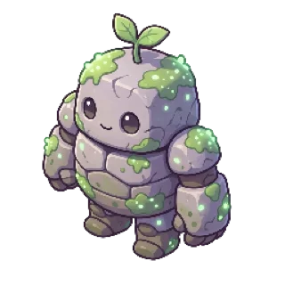

00:00
Pick a length.
Press start.
One, five, fifteen or twenty-five minutes. Swipe to the one you can honestly commit to and hand your attention over.
00:00 — press start
A pomodoro timer with a small ghost living inside it. It works while you work, celebrates when you finish, and quietly droops when you wander off.
One session, start to finish
Morning, Yvan
Boo is ready when you are
Focusing
18:24
Stay in the app to keep the session alive
Monday, 10 August
9:41
Focusing — keep going
Session failed
07:15
You left the app. No XP, no coins.
Session complete
25:00
00:00
One, five, fifteen or twenty-five minutes. Swipe to the one you can honestly commit to and hand your attention over.
00:12
It settles into a focused wobble for as long as the clock runs. You're not watching a number go down — someone is working next to you.
08:30
Locking your phone never fails a session — putting it down is the whole point. The timer runs on wall-clock time, and your progress stays where you can see it: a Live Activity on the lockscreen, and in the Dynamic Island the moment you pick the phone back up.
17:45
Switch to another app and a ten-second grace period starts, counting down in the island. Come back in time and nothing happened. Don't, and the session fails — your buddy droops, and there's no XP and no coins to show for it.
25:00
XP, a level, and every so often a small pile of coins — rare enough that they actually feel earned.
While the clock runs
Hand Momo a list before you start. For the length of the session, iOS Screen Time refuses to open them — not a reminder, not a nudge, just a door that doesn't budge. Momo stays lit, because that's the one you're supposed to be in.
Strict Mode is iOS only, and entirely opt-in.
Between sessions
Coins buy new ghosts, pets that perch beside you while you work, and accessories. Coins only — there is nothing to buy with real money, so nobody skips the part where you focus.
Boo
StarterMint
◎ 250Shadow
◎ 500Glimmer
◎ 100Sprout
◎ 100Faye
◎ 180
Pebblin
◎ 180Frostpup
◎ 320Tomorrow
One finished session keeps the day. Miss a day and the chain resets — no shame screens, no notifications begging you to come back.
The rest of it
Drag, or just keep scrolling.
Pick the apps that ruin your afternoon and Screen Time keeps them shut until the timer runs out. iOS only.
A Live Activity keeps the countdown on your lockscreen and in the Dynamic Island, so you never unlock "just to check".
A heatmap of when you really focus, by hour and by weekday, built from your own sessions in your own timezone.
Early mornings, flawless runs, a full deck of characters. They arrive quietly, without a popup parade.
Open a co-focus room and everyone's buddy works in the same space, live. The leaderboard ranks XP earned, not hours logged.
One finished session holds the day. The calendar shows the run without turning a missed day into a guilt trip.
Solo sessions run fully offline — timer, XP and coins included. Everything syncs the moment you're back on a network.
No ads. No coin packs. Nothing held back for a second purchase. Just you, a timer, and a small ghost who'd rather you didn't leave.